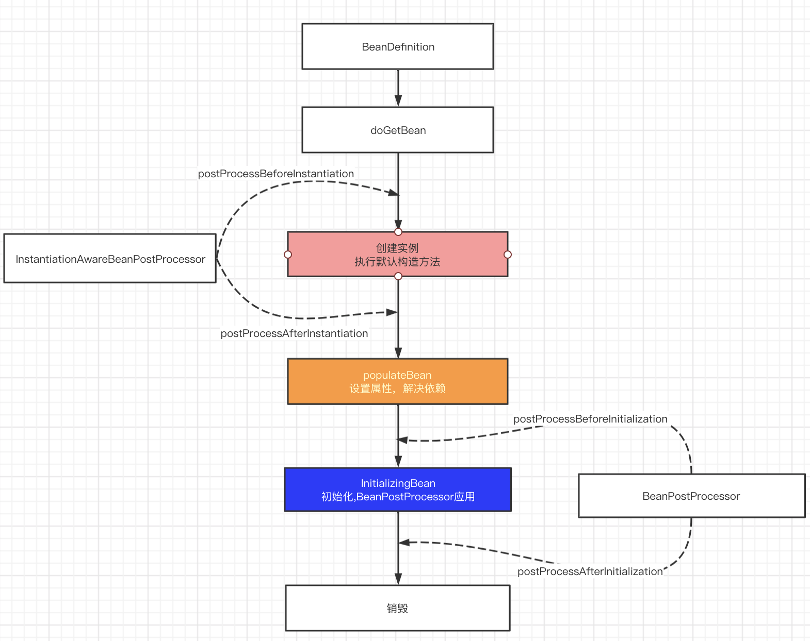

bean的生命周期？
- 以如下测试代码为例
@Test
public void testClassPathXmlApplicationContextBean() {
ApplicationContext applicationContext =
new ClassPathXmlApplicationContext("spring-full-life.xml");
System.out.println("----------------applicationContext");
FullBean fullBean = (FullBean)applicationContext.getBean("fullBean");
System.out.println("fullBean.getName:" + fullBean.getName());
((ClassPathXmlApplicationContext) applicationContext).close();
}
其中单例fullBean依赖了单例fullBeanB且配置了相关初始化，销毁方法，和BeanPostProcessor
<?xml version="1.0" encoding="UTF-8"?>
<beans xmlns="http://www.springframework.org/schema/beans"
xmlns:xsi="http://www.w3.org/2001/XMLSchema-instance"
xsi:schemaLocation="http://www.springframework.org/schema/beans https://www.springframework.org/schema/beans/spring-beans-3.0.xsd">
<bean id="fullBean" class="com.mb.fulllife.FullBean" init-method="selfInit" destroy-method="selfDestroy">
<property name="name" value="tom"></property>
<property name="fullBeanB" ref="fullBeanB"/>
</bean>
<bean id="fullBeanB" class="com.mb.fulllife.FullBeanB" init-method="selfInit" destroy-method="selfDestroy">
</bean>
<bean id="fullLifeInstantiationAwareBeanPostProcessor" class="com.mb.fulllife.FullLifeInstantiationAwareBeanPostProcessor">
</bean>
<bean id="fullLifeBeanPostProcessor" class="com.mb.fulllife.FullLifeBeanPostProcessor">
</bean>
</beans>
fullBean生命周期
ClassPathXmlApplicationContext
doGetBean(InstantiationAwareBeanPostProcessor
doGetBean(BeanPostProcessor
doGetBean(fullBean
dependsOn
createBean
resolveBeforeInstantiation
applyBeanPostProcessorsBeforeInstantiation（应用所有的InstantiationAwareBeanPostProcessor）
postProcessBeforeInstantiation
doCreateBean
createBeanInstance(默认构造方法，反射创建一个对象)
populateBean(设置属性，其中依赖Bean 走 dochteren逻辑)
InstantiationAwareBeanPostProcessor：postProcessAfterInstantiation
applyPropertyValues(beanName, mbd, bw, pvs);
initializeBean
applyBeanPostProcessorsBeforeInitialization（应用所有的BeanPostProcessor）
postProcessBeforeInitialization
invokeInitMethods
InitializingBean(afterPropertiesSet)
InitMethod
加入单例池
fullBean.getName ( bean的使用)
((ClassPathXmlApplicationContext) applicationContext).close()
doClose
Publish shutdown event.
lifecycleProcessor.onClose();
destroyBeans
DisposableBean
destroy-method
closeBeanFactory
onClose()
this.active.set(false);
Runtime.getRuntime().removeShutdownHook(this.shutdownHook);
- 单例Bean生命周期
